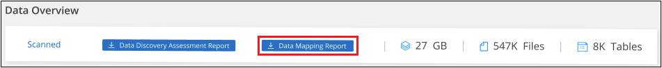

릴리스 정보
릴리스 정보
조직에 저장된 데이터에 대한 거버넌스 세부 정보를 봅니다
 변경 제안
변경 제안
조직의 스토리지 리소스에 있는 데이터와 관련된 비용을 제어할 수 있습니다. BlueXP 분류는 시스템에 있는 오래된 데이터, 비업무용 데이터, 중복 파일 및 대용량 파일의 양을 식별하므로 일부 파일을 제거하거나 더 저렴한 오브젝트 스토리지에 계층화할 것인지 결정할 수 있습니다.
또한, 데이터를 사내 위치에서 클라우드로 마이그레이션하려는 경우 데이터의 크기와 데이터를 이동하기 전에 중요한 정보가 포함되어 있는지 여부를 확인할 수 있습니다.
Governance 대시보드
Governance 대시보드는 스토리지 리소스에 저장된 데이터와 관련된 효율성을 높이고 비용을 제어할 수 있는 정보를 제공합니다.

기회 저장
삭제할 데이터가 있는지 또는 더 저렴한 오브젝트 스토리지에 계층화해야 하는지 여부를 확인하려면 Saving Opportunities 영역의 항목을 조사하십시오. 조사 페이지에서 필터링된 결과를 보려면 각 항목을 클릭합니다.
-
* 오래된 데이터 * - 3년 전에 마지막으로 수정된 데이터
-
* 비 비즈니스 데이터 * - 범주 또는 파일 형식에 따라 업무와 관련이 없는 것으로 간주되는 데이터 여기에는 다음이 포함됩니다.
-
애플리케이션 데이터
-
오디오
-
실행 파일
-
이미지
-
로그
-
비디오
-
기타(일반 "기타" 범주)
-
-
* 중복 파일 * - 스캔할 데이터 원본의 다른 위치에 중복되는 파일입니다. "어떤 유형의 중복 파일이 표시되는지 확인합니다".
- 참고
-
데이터 소스 중 하나라도 데이터 계층화를 구현하는 경우 오브젝트 스토리지에 이미 있는 이전 데이터를 _st오래된 Data_category에서 식별할 수 있습니다.
결과 수가 가장 많은 정책입니다
Policies_영역에서 결과 수가 가장 많은 정책이 목록 맨 위에 나타납니다. 정책 이름을 클릭하여 조사 페이지에 결과를 표시합니다. 사용 가능한 모든 정책 목록을 보려면 * 모두 보기 * 를 클릭합니다.
을 클릭합니다 "여기" 정책에 대해 자세히 알아보십시오.
데이터 개요
Data Overview_ 섹션에서는 스캔되는 모든 데이터에 대한 간단한 개요를 제공합니다. 버튼을 클릭하여 모든 작업 환경 및 데이터 소스에 대한 사용 용량, 데이터 수명, 데이터 크기 및 파일 유형이 포함된 전체 데이터 매핑 보고서를 다운로드합니다. 을 참조하십시오 데이터 매핑 보고서 이 보고서에 대한 자세한 내용은 를 참조하십시오.
데이터 민감도에 따라 나열된 상위 데이터 리포지토리
Sensitivity Level_영역별 상위 데이터 리포지토리는 가장 중요한 항목을 포함하는 상위 4개의 데이터 저장소(작업 환경 및 데이터 원본)를 나열합니다. 각 작업 환경의 막대 차트는 다음과 같이 구분됩니다.
-
중요하지 않은 데이터입니다
-
개인 데이터
-
민감한 개인 데이터
각 섹션 위로 마우스를 가져가면 각 범주의 총 항목 수를 볼 수 있습니다.
조사 페이지에서 필터링된 결과를 보려면 각 영역을 클릭하여 더 자세히 조사할 수 있습니다.
민감도 및 넓은 권한으로 나열된 데이터
중요한 데이터 및 광범위한 권한 영역 은 중요한 데이터(민감한 개인 데이터 및 민감한 개인 데이터 포함)를 포함하고 지나치게 허용적인 파일의 히트 맵을 제공합니다. 이렇게 하면 민감한 데이터와 관련하여 어떤 위험이 있을 수 있는지 확인할 수 있습니다.
파일 등급은 X축에 있는 파일에 액세스할 수 있는 권한이 있는 사용자 수(가장 낮음에서 가장 높음)와 Y축에 있는 파일 내의 중요한 식별자 수(가장 낮음에서 가장 높음)를 기준으로 합니다. 블럭은 X 및 Y 축의 항목과 일치하는 파일 수를 나타냅니다. 밝은 색상의 블록이 적합합니다. 더 적은 수의 사용자가 파일에 액세스할 수 있고 파일당 중요한 식별자는 더 적습니다. 어두운 블럭은 조사하려는 항목입니다. 예를 들어 아래 화면에는 짙은 파란색 블록의 호버 텍스트가 표시됩니다. 이 그림은 751-100명의 사용자가 액세스할 수 있는 1,500개의 파일이 있으며, 파일당 501-100개의 민감한 식별자가 있다는 것을 보여 줍니다.

원하는 블록을 클릭하여 조사 페이지에서 영향을 받는 파일의 필터링된 결과를 확인하여 더 자세히 조사할 수 있습니다.
BlueXP 분류와 ID 서비스를 통합하지 않은 경우 이 패널에 데이터가 표시되지 않습니다. "Active Directory 서비스를 BlueXP 분류와 통합하는 방법을 확인하십시오".

|
이 패널은 CIFS 공유, OneDrive 및 SharePoint 데이터 소스의 파일을 지원합니다. 현재 데이터베이스, Google Drive, Amazon S3, 일반 오브젝트 스토리지는 지원되지 않습니다. |
열기 권한 유형별로 나열된 데이터
Open Permissions_영역에는 스캔되는 모든 파일에 대해 존재하는 각 권한 유형의 백분율이 표시됩니다. 차트에는 다음과 같은 유형의 사용 권한이 표시됩니다.
-
열기 권한이 없습니다
-
조직에 열기
-
공개
-
알 수 없는 액세스
각 섹션 위로 마우스를 가져가면 각 범주의 총 파일 수를 볼 수 있습니다. 조사 페이지에서 필터링된 결과를 보려면 각 영역을 클릭하여 더 자세히 조사할 수 있습니다.
데이터 기간 및 데이터 크기 그래프
Age_and_Size_graphs의 항목을 조사하여 삭제해야 할 데이터가 있는지 또는 더 저렴한 오브젝트 스토리지에 계층화해야 하는지 여부를 확인해야 할 수 있습니다.
차트의 한 지점 위로 마우스를 가져가면 해당 범주의 데이터 사용 기간 또는 크기에 대한 세부 정보를 볼 수 있습니다. 해당 기간 또는 크기 범위로 필터링된 모든 파일을 보려면 클릭합니다.
-
* 데이터 그래프의 기간 * - 데이터가 생성된 시간, 마지막으로 액세스한 시간 또는 마지막으로 수정된 시간을 기준으로 데이터를 분류합니다.
-
* 데이터 그래프 크기 * - 크기에 따라 데이터를 분류합니다.
- 참고
-
데이터 소스 중 하나라도 데이터 계층화를 구현하는 경우 오브젝트 스토리지에 이미 있는 이전 데이터를 _ Age of Data_graph에서 식별할 수 있습니다.
가장 많이 식별된 데이터 분류
범주
범주는 보유한 정보의 유형을 표시하여 데이터의 상태를 이해하는 데 도움이 됩니다. 예를 들어 "이력서" 또는 "직원 계약"과 같은 범주에는 중요한 데이터가 포함될 수 있습니다. 결과를 조사할 때 직원 계약이 안전하지 않은 위치에 저장되어 있는 것을 발견할 수 있습니다. 그런 다음 해당 문제를 해결할 수 있습니다.
을 참조하십시오 "범주별로 파일 보기" 를 참조하십시오.
파일 형식
파일 형식을 검토하면 특정 파일 형식이 올바르게 저장되지 않은 것을 발견할 수 있으므로 중요한 데이터를 제어하는 데 도움이 됩니다.
을 참조하십시오 "파일 형식 보기" 를 참조하십시오.
AIP 레이블
AIP(Azure Information Protection)에 가입한 경우 콘텐츠에 레이블을 적용하여 문서와 파일을 분류하고 보호할 수 있습니다. 파일에 할당된 가장 많이 사용되는 AIP 레이블을 검토하면 파일에서 가장 많이 사용되는 레이블을 확인할 수 있습니다.
을 참조하십시오 "AIP 레이블" 를 참조하십시오.
데이터 매핑 보고서
데이터 매핑 보고서는 마이그레이션, 백업, 보안 및 규정 준수 프로세스를 결정하는 데 도움이 되도록 기업 데이터 소스에 저장되는 데이터에 대한 개요를 제공합니다. 이 보고서에는 먼저 모든 작업 환경 및 데이터 소스가 요약되어 있는 개요가 나열되며, 각 작업 환경에 대한 분석 정보가 제공됩니다.
보고서에는 다음 정보가 포함됩니다.
| 범주 | 설명 |
|---|---|
사용 용량 |
모든 작업 환경: 각 작업 환경의 파일 수와 사용된 용량을 나열합니다. 단일 작업 환경의 경우: 최대 용량을 사용하는 파일을 나열합니다. |
데이터 사용 기간 |
파일이 생성되거나, 마지막으로 수정되거나, 마지막으로 액세스된 시간에 대한 3개의 차트와 그래프를 제공합니다. 특정 날짜 범위를 기준으로 파일 수와 사용된 용량을 나열합니다. |
데이터 크기 |
작업 환경의 특정 크기 범위 내에 있는 파일 수를 나열합니다. |
파일 형식 |
에는 작업 환경에 저장되는 각 파일 유형의 총 파일 수와 사용된 용량이 나와 있습니다. |
데이터 매핑 보고서를 생성합니다
BlueXP 분류의 Governance 탭에서 이 보고서를 생성합니다.
-
BlueXP 메뉴에서 * 거버넌스 > 분류 * 를 클릭합니다.
-
Governance * 를 클릭한 다음 * Data Mapping Report * 버튼을 클릭합니다.

BlueXP 분류는 PDF 보고서를 생성하여 필요에 따라 다른 그룹에 검토 및 전송할 수 있습니다.
보고서가 1MB 이상인 경우 PDF 파일이 BlueXP 분류 인스턴스에 유지되고 정확한 위치에 대한 팝업 메시지가 표시됩니다. BlueXP 분류가 사내 Linux 시스템이나 클라우드에 배포한 Linux 시스템에 설치되어 있는 경우 PDF 파일로 직접 이동할 수 있습니다. 클라우드에 BlueXP 분류를 배포할 때 PDF 파일을 다운로드하려면 BlueXP 분류 인스턴스에 SSH를 사용해야 합니다. "Classification 인스턴스의 데이터에 액세스하는 방법을 확인하십시오".
참고: 을 클릭하여 보고서의 첫 페이지에 나타나는 회사 이름을 BlueXP 분류 페이지 상단에서 사용자 지정할 수 있습니다  그런 다음 * 회사 이름 변경 * 을 클릭합니다. 다음에 보고서를 생성할 때 새 이름이 포함됩니다.
그런 다음 * 회사 이름 변경 * 을 클릭합니다. 다음에 보고서를 생성할 때 새 이름이 포함됩니다.
데이터 검색 평가 보고서
Data Discovery Assessment Report는 스캔한 환경에 대한 상위 수준의 분석을 통해 시스템 결과를 강조하고 문제 영역 및 잠재적인 개선 단계를 보여 줍니다. 결과는 데이터의 매핑과 분류를 기반으로 합니다. 이 보고서의 목표는 데이터 세트의 다음과 같은 세 가지 중요한 측면에 대한 인식을 높이는 것입니다.
| 피처 | 설명 |
|---|---|
데이터 거버넌스 문제 |
소유하고 있는 모든 데이터와 비용을 절감할 수 있는 영역을 상세하게 보여줍니다. |
데이터 보안 노출 |
광범위한 액세스 권한으로 내부 또는 외부 공격에 데이터에 액세스할 수 있는 영역입니다. |
데이터 규정 준수 격차 |
개인 정보 또는 민감한 개인 정보가 보안 및 DSAR(데이터 주체 액세스 요청)을 위해 위치한 경우 |
평가 후에 이 보고서는 다음과 같은 분야를 식별합니다.
-
보존 정책을 변경하거나 특정 데이터(오래된 데이터, 중복 데이터 또는 비업무용 데이터)를 이동 또는 삭제하여 스토리지 비용 절감
-
전역 그룹 관리 정책을 수정하여 광범위한 사용 권한이 있는 데이터를 보호합니다
-
PII를 보다 안전한 데이터 저장소로 이동하여 개인 또는 민감한 개인 정보가 있는 데이터를 보호합니다
데이터 검색 평가 보고서를 생성합니다
BlueXP 분류의 Governance 탭에서 이 보고서를 생성합니다.
-
BlueXP 메뉴에서 * 거버넌스 > 분류 * 를 클릭합니다.
-
Governance * 를 클릭한 다음 * Data Discovery Assessment Report * 버튼을 클릭합니다.

BlueXP 분류는 PDF 보고서를 생성하여 필요에 따라 다른 그룹에 검토 및 전송할 수 있습니다.
참고: 을 클릭하여 보고서의 첫 페이지에 나타나는 회사 이름을 BlueXP 분류 페이지 상단에서 사용자 지정할 수 있습니다 그런 다음 * 회사 이름 변경 * 을 클릭합니다. 다음에 보고서를 생성할 때 새 이름이 포함됩니다.